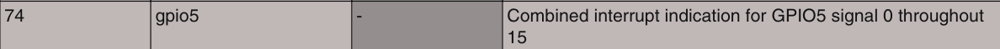
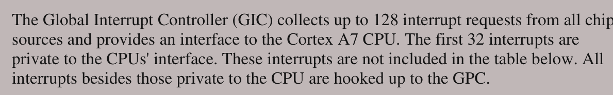

每个中断对象包含：1个中断处理函数和需要传入的参数——一个函数指针+一个未定义类型指针。所以将中断对象打包成一个结构体：
/* 定义中断处理函数原型 */
typedef void (*sys_irq_handler_t)(unsigned int id, void *para);
/* 定义中断函数结构体 */
typedef struct _sys_irq_handle{
sys_irq_handler_t irqHandler;
void* usrPara;
}sys_irq_handle_t;指定一个默认中断处理函数：
/* 定义默认中断处理函数 */
static void default_irqHandler(unsigned int id, void *para){
while(1);
}将所有中断对象归入一个表中，按中断id索引：
#define NUM_OF_IT_VECTORS 160
static sys_irq_handle_t irqTable[NUM_OF_IT_VECTORS];后续可能涉及到中断嵌套，因此定义一个中断嵌套计数器：
static unsigned int irqNesting; //中断嵌套计数器初始化中断对象表：
/* 初始化中断处理表 */
static void sys_iqrTable_init(void){
unsigned char i = 0;
irqNesting = 0; //中断嵌套计数器
for(i = 0; i< NUM_OF_IT_VECTORS; i++){
irqTable[i].irqHandler = default_irqHandler;
irqTable[i].usrPara = NULL;
}
}在上一节中，我们实现了当进入中断时跳入一个名为system_irqhandler的函数处理中断。因此我们需要定义该函数：
/// @brief 中断处理函数
/// @param gicciar 寄存器gicciar的值
/// @note 进入irq中断后自动调用
void system_irqhandler(unsigned int gicciar){
uint32_t id = gicciar & 0x3ff; //从gicciar寄存器中读取中断id号（0~9位 故& 0x3ff）
/* 安全检查 */
if(id == 1023 || id >= NUM_OF_IT_VECTORS) return; //1023即没有中断，即0~9位全为1
irqNesting++;
/* 开始处理 */
irqTable[id].irqHandler(id, irqTable[id].usrPara);
irqNesting--;
}我们不可能只用默认中断处理函数，肯定要自己自定义，自定义完处理函数后，将该函数注册给中断对象，因此我们需要一个用于注册的函数：
/// @brief 用于注册你自定义的中断处理函数
/// @param irq_id 你为哪个中断写好了处理函数，写入id
/// @param handler 你写的处理函数的地址
/// @param para 要传入的参数
void register_irqHandler(IRQn_Type irq_id, sys_irq_handler_t handler, void *para){
irqTable[irq_id].irqHandler = handler;
irqTable[irq_id].usrPara = para;
}通过原理图可知，应配置为上升沿触发。
寄存器用于指定触发方式——上升沿触发。
我的开发板应指定GOIO5_ICR1_icr1 为 10。
该寄存器用于使能中断。
我的开发板应指定GPIO5_IMR_imr1 为 1——UNMASKED
参考手册中指出，处理完中断后，需清除GPIO_ISR寄存器的相应位。
需要注意的是通过对该位写1清除。
just like NVIC… you must know cubemx right？
GPIO5_1对应的中断id为74

但是注意这段话：

告诉我们前面还有32个中断接到了CPU的接口 所以中断ID为 74+32 = 106。